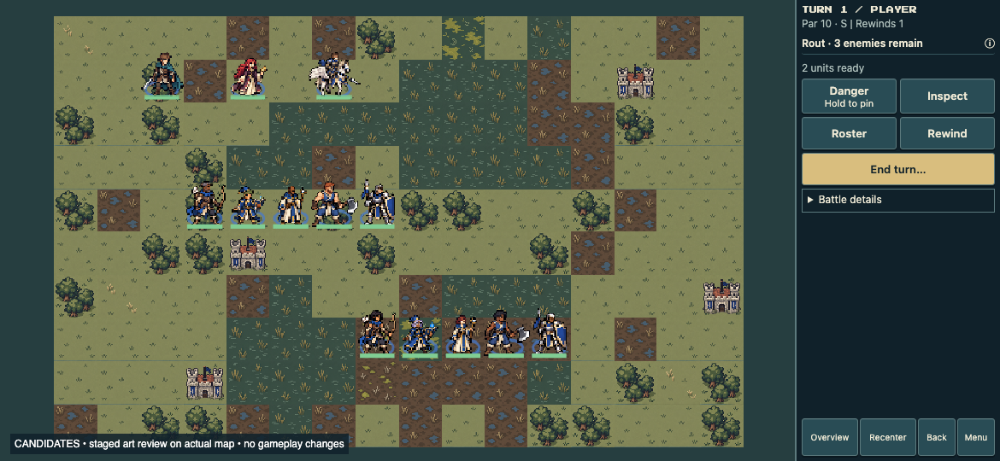

Next set: mounted units, Dancer, near-white-bow Archer
Archer, Mage, Cleric, Fighter and Knight — two player appearances each. Edric, Sera and Pegasus Knight are unchanged comparison anchors.
Development principles · Exact prompts and class briefs · Sword-class review
Both rows read left to right: Archer · Mage · Cleric · Fighter · Knight. Player A is in the middle row; Player B is in the lower row. The lords and Pegasus Knight are above.

Hair, skin tone, age and headgear vary across recruits. Class recognition should survive those variations.
Cleric ivory robes, Fighter axe heads and Knight shields read clearly in this staged view. Mage is the smallest-looking figure; its cap, book and cyan accent need your review at normal viewing size. Archer bow curves are visible, but individual faces remain secondary at map scale. These are qualitative observations, not a recognition test.
64×64 anchored textures at 1× below. Click a sheet for the full source.
Static grass/swamp, stone, grayscale and silhouette review. Animation, fog, range overlays, live acted-state behavior and real-device testing are still pending. Samples are not production-ready animation sets.